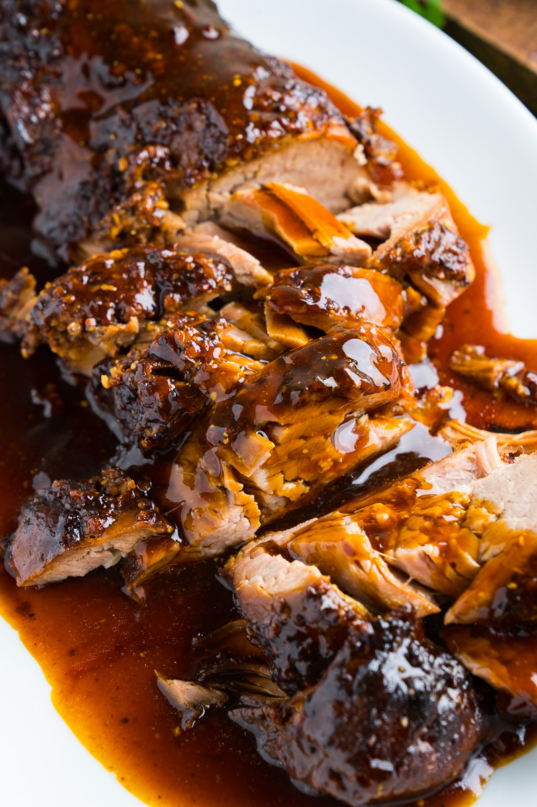

Honey Parmesan Pork Tenderloin

There is nothing like a good Honey Parmesan Pork Tenderloin. I don't know how I could have survived without having this recipe in my life. I will share it with you, hopefully to brighten up your life as well!
WARNING: A Slow-cooker is a MUST.
Ingredients
- Boneless pork loin roast
- Parmesan cheese
- Honey
- Soy sauce
- Dried basil
- Dried oregano
- Garlic
- Olive oil
- Salt
- Cornstarch
- Chicken broth
- Sugar, optional
Steps
- Place pork roast in slow cooker.
- In a bowl, combine cheese, honey, soy sauce, basil, oregano, garlic, oil, and salt.
- Pour mixture over the top of roast.
- Cover and cook on low for 5-6 hours or until the internal temperature reaches 145-150 F degrees.Check with a meat thermometer.
- Remove meat and place on platter.
- Strain juices in slow cooker and put into a small sauce pan.
- Mix cornstarch and chicken broth together.
- Add into strained juices and stir until thickened over medium heat. Add in a teaspoon of sugar if sauce needs to be a bit sweeter, optional
- Slice roast and serve with glaze.
Frequently Asked Questions:
Can I make this in the Instant Pot? Place all the ingredients in the Instant Pot. Turn the valve to sealing and cook on Manual High Pressure for 18 minutes. Do a 10 minute natural release. Check temperature of pork, you want it at 145-150 degrees F.
How do I store leftovers? Leftover pork loin can be refrigerated for up to 3 days, or frozen in a freezer-safe airtight container for up to 3 months. Use leftovers to make sandwiches or tacos, it is delicious on top of nachos too!